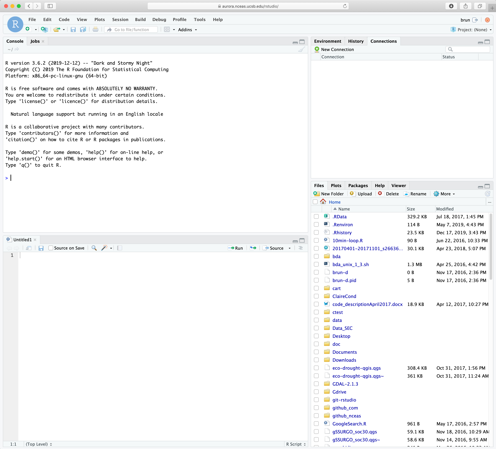
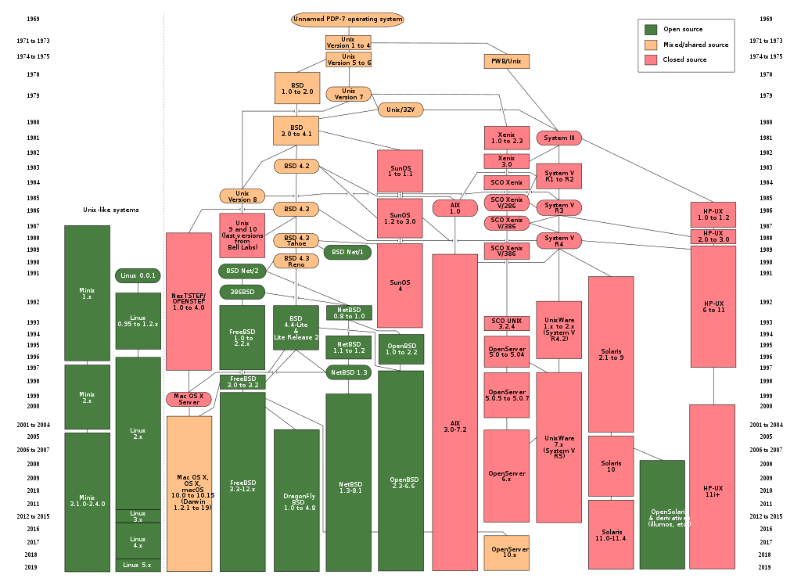
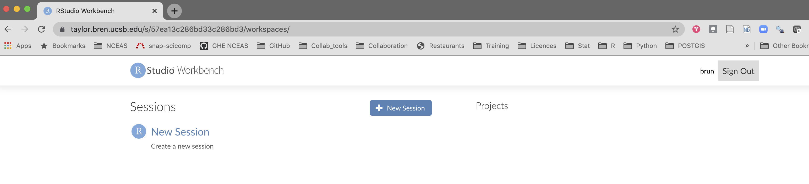
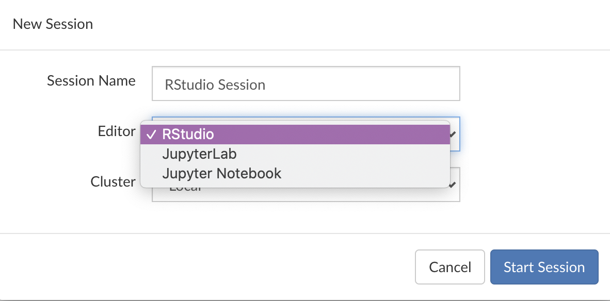
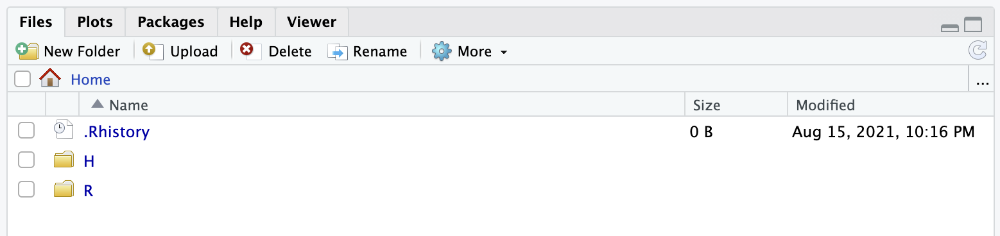
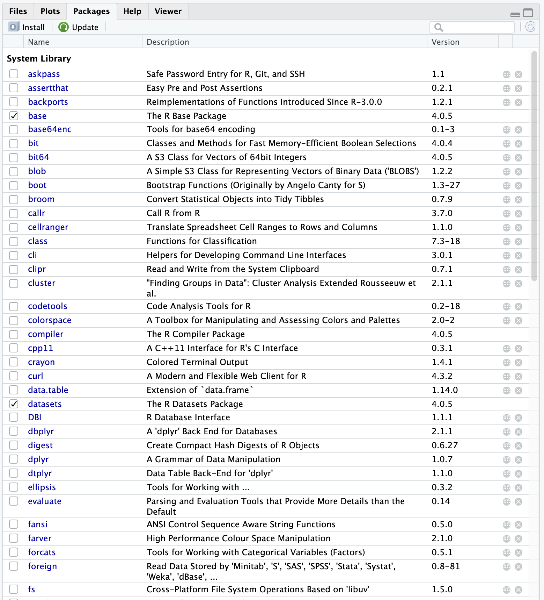
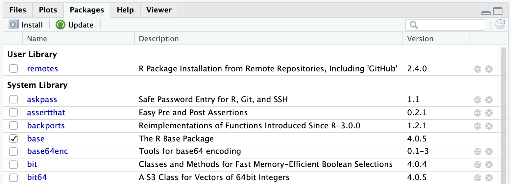

{kind=link}

Working on a remote server
Learning Objectives
In this lesson, you will learn:
- How to connect to a remote server
- Get familiar with RStudio server
- Get an introduction to the command line (CLI) & bash
Why working on a remote machine?
Often the main motivation is to scale your analysis beyond what a personal computer can handle. R being pretty memory intensive, moving to a server often provides you more RAM and thus allows to load larger data in R without the need of slicing your data into chunks. But there are also other advantages, here are the main for scientist:
- Power: More CPUs/Cores (24/32/48), More RAM (256/384GB)
- Capacity: More disk space and generally faster storage (in highly optimized RAID arrays)
- Security: Data are spread across multiple drives and have nightly backups
- Collaboration: shared folders for code, data, and other materials; same software versions
Warning
=> The operating system is more likely going to be Linux!!
More on this in a few minutes
Introduction to UNIX and its siblings
- UNIX
- Originally developed at AT&T / Bell Labs circa 1970. Has experienced a long, multi-branched evolutionary path
- POSIX (Portable Operating System Interface)
- a set of specifications of what an OS needs to qualify as “a Unix”, to enhance interoperability among all the “Unix” variants
Various Unices

- Linux (Linus Torvalds, 1991)
-
is not fully POSIX-compliant, but certainly can be regarded as functionally Unix
Some popular Linux distributions include Debian, Fedora Linux, Arch Linux, and Ubuntu. There are also commercial distributions such as Red Hat Enterprise Linux and SUSE Linux Enterprise. Android is actually Linux-based!
- OS X
- is a Unix!
Some Unix hallmarks
- Supports multi-users, multi-processes
- Highly modular: many small tools that do one thing well, and can be combined
- Culture of text files and streams
- Primary OS on HPC (High Performance Computing Systems)
- Main OS on which Internet was built
Connecting via IDE - Posit Workbench
From an user perspective, Posit Workbench is your familiar RStudio interface in your web browser. The big difference however is that with RStudio Server the computation will be running on the remote machine instead of your local personal computer. This also means that the files you are seeing through the RStudio Server interface are located on the remote machine. And this also include your R packages!!! This remote file management is the main change you will have to adopt in your workflow.
To help with remote files management, the RStudio Server interface as few additional features that we will be discussing in the following sections.
Connecting to MEDS Analytical Server
TipReference
Enter your credentials
You are in!

- Click on the
New Sessionbutton. You can see that you are able to start both an R (Studio) and jupyter notebook session. Let’s take a few minutes to experiment with the different options.
For this session, we are going to select the RStudio option and hit Start Session.

You should now see a very familiar interface :) Except it is running on the server with a lot of resources at your fingertips!!
File structure
Let’s explore explore a little bit the file structure on the server. By default on a Linux server, you are located in the home folder. This folder is only accessible to you and it is where you can store your personal files on a server. You should see 2 folders: R and H

The R folder is where your local R packages will be installed, you can ignore it. The H is your H drive that the Bren School is offering to all its students. If you click on it you should see any files you have uploaded there.
Let us make a folder named github by click on the New Folder button at the top of the tab. We will use this folder (also named directory in linux/unix terms) to clone any GitHub repository.
R packages
If we go to the Packages tab, we can see a long list of packages that have already be installed by our system administrator (Brad). Those packages have been installed server wide, meaning that all the users have access to them.

A user can also installed her/his own packages. Let’s try to install the remote package that lets you install R packages directly from GitHub: install.packages("remotes"). Once done, note a new section that appeared on the Packages tab named User Library. Each of us have now its own copy of the package installed (in this R folder we were talking about a few minutes ago).

A few notes:
- In this example we will have made a better choice to have the
remotespackage installed once at the system level - Some R packages depend on external libraries that need to be installed on the server. Those libraries will have to be installed by the system administrator first before you can install the R package
- Installing an R package on a linux machine generally requires compilation of the code and will thus take more time to install than when you install it from pre-compiled binaries
Look now inside you R folder!!